YANIS
DAHMAN
— Portfolio BTS SIO SISR, Administrateur Systèmes & Réseaux, Annecy
Étudiant en BTS SIO SISR
Qui suis-je ?
- Annecy (74), France
- yanisdahman0@gmail.com
- +33 07 69 54 18 30
- linkedin / yanis-dahman
Mon profil
Étudiant en BTS SIO option SISR au Lycée Gabriel Fauré — Annecy, je me spécialise en administration systèmes, réseaux et cybersécurité. Je poursuis avec un Bachelor ASRC à la rentrée 2026.
Mes deux stages — chez Prodhys puis chez Novarina où j'ai déployé Bitwarden Enterprise en totale autonomie — m'ont permis de confronter mes compétences à des environnements professionnels réels.
- Autonomie
- Rigueur
- Curiosité technique
- Esprit d'équipe
- Cybersécurité & OSINT
- CTF & Labs pratiques
- Sport & Football
- Voyager
- Bachelor ASRC — Administration Systèmes, Réseaux & Cybersécurité
- Lycée Saint-Michel — Annecy
- Alternance · Rentrée Septembre 2026
- Secteur visé : infrastructure IT & cybersécurité
Formation & Expériences
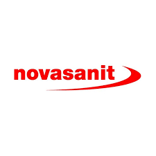
Déploiement Bitwarden Enterprise en totale autonomie — projet couvrant la gestion de projet, l'infrastructure SSO/SCIM, la gouvernance sécurité et le déploiement de masse via GPO sur le parc Novarina.
Missions principales
- Gestion de projet : pilotage complet avec réunions d'avancement, documentation technique, procédures écrites et supports vidéo
- Infrastructure & SSO : liaison SAML 2.0 entre Bitwarden et Microsoft Entra ID (Azure AD) pour centraliser l'authentification
- Automatisation SCIM : provisionnement automatique de création/révocation des comptes en temps réel selon l'annuaire
- Gouvernance & Sécurité : politiques SSO obligatoire, Master Password complexe, blocage domaines non approuvés, récupération de compte
- Déploiement de masse GPO : stratégies de groupe sur Microsoft Edge pour l'extension Bitwarden et la configuration des Vault
- Gestion des privilèges : segmentation par Collections avec droits granulaires (Admin IT / utilisateurs restreints)
- Support technique : assistance et dépannage accès, synchronisation et utilisation auprès des collaborateurs
- Conduite de projet : présentation technique à l'équipe IT, formation des collaborateurs et validation passage en production
Compétences
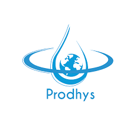
Première immersion professionnelle en environnement IT — configuration de postes sous Windows avec déploiement de la suite Office, rédaction de documentation technique et diagnostic d'un incident réseau imprimante.
Missions principales
- Installation de postes informatiques avec déploiement de la suite Microsoft Office
- Rédaction de documentation technique des interventions réalisées
- Diagnostic et réparation d'une imprimante ne parvenant pas à se connecter au réseau
Compétences
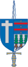
Formation Bac+3 en alternance — Administration avancée des systèmes, réseaux et cybersécurité. Préparation à des rôles d'ingénieur systèmes & réseaux ou expert en sécurité des infrastructures.
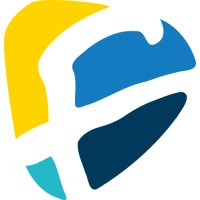
Formation Bac+2 en Solutions d'Infrastructure, Systèmes et Réseaux. Administration systèmes, virtualisation, gestion réseau, cybersécurité et projets professionnels (MDL, BMS).
- Administration Linux / Windows Server (AD DS, DHCP, DNS, GPO)
- Virtualisation (VirtualBox, VMware Workstation, Proxmox)
- Gestion réseau VLAN / Firewall / Routage Cisco
- Sécurité SI — pfSense, VPN, Wireshark
- Supervision & déploiement (GLPI, FOG)
- Scripting Bash / PowerShell & Active Directory
- Stockage réseau — NAS, Samba, NFS, Clonezilla
- SSH & gestion des clés — accès sécurisés serveurs
- Chiffrement & PKI — certificats, algorithmes sym./asym.
- Haute disponibilité & équilibrage DHCP Windows
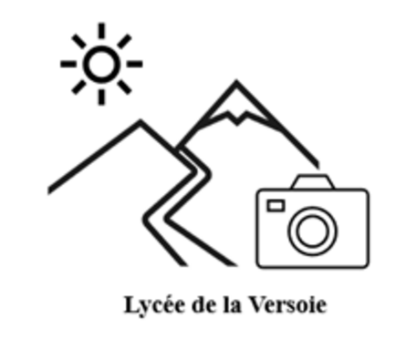
Spécialité Ressources Humaines.
Fortement intéressé par l'informatique et la cybersécurité,
développement autodidacte depuis la 3e.
- Gestion & Management des organisations
- Spécialité Ressources Humaines
- Droit & Économie
Certifications
Mes certifications
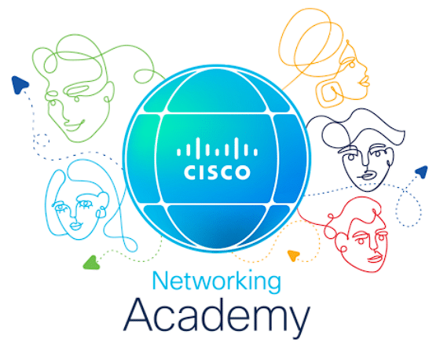

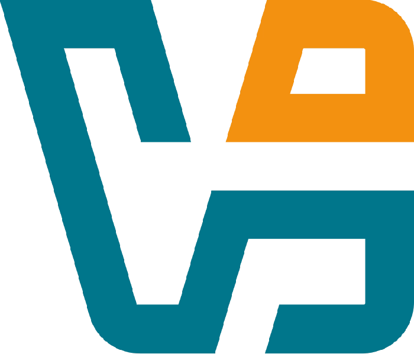
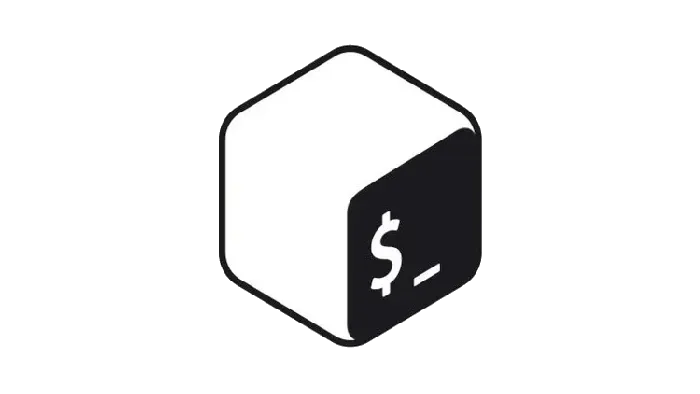
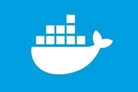
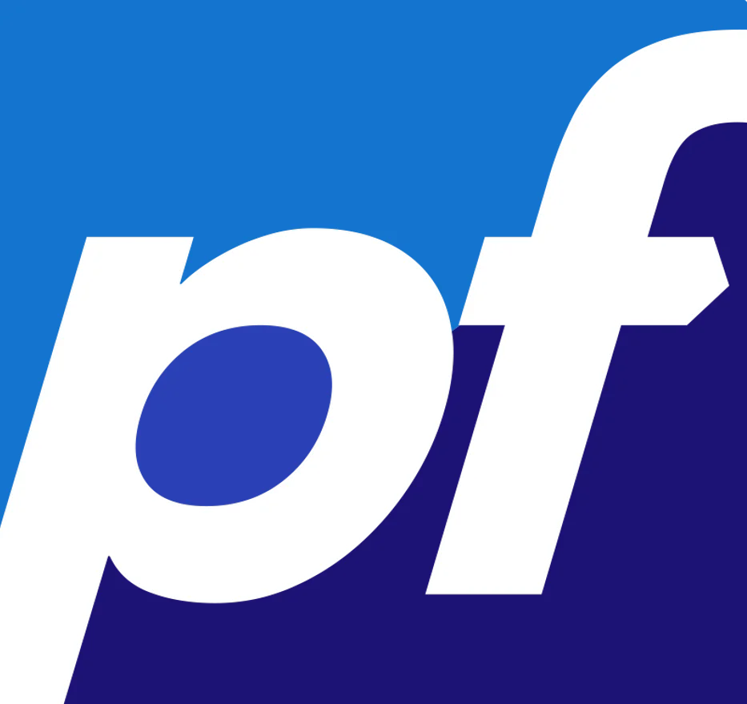
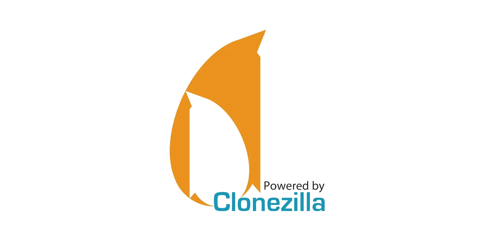
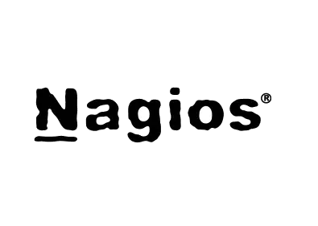
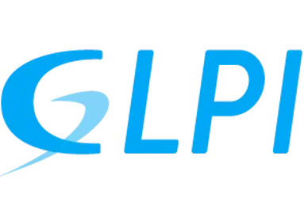
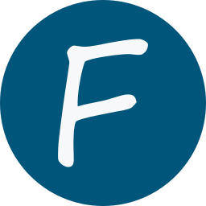
Travaux & Projets
Supports de cours, travaux pratiques et projets réalisés en BTS SIO SISR. Filtrez par catégorie pour retrouver un document.

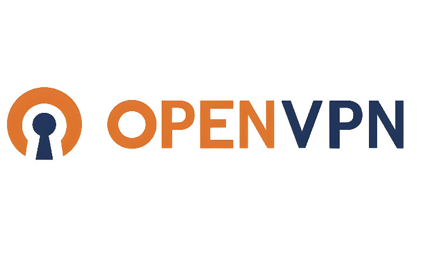
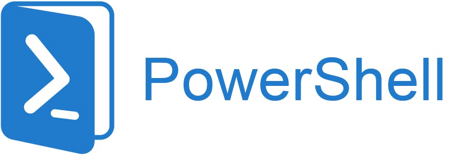
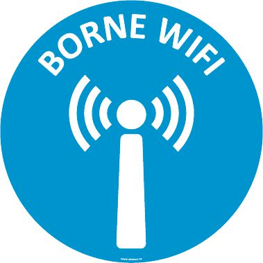
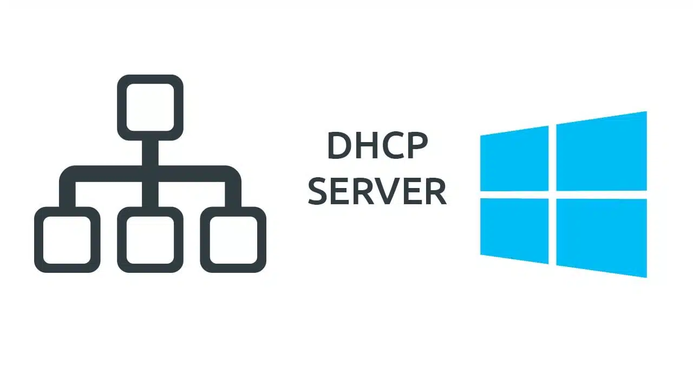
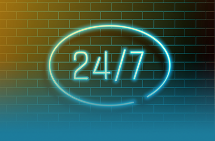

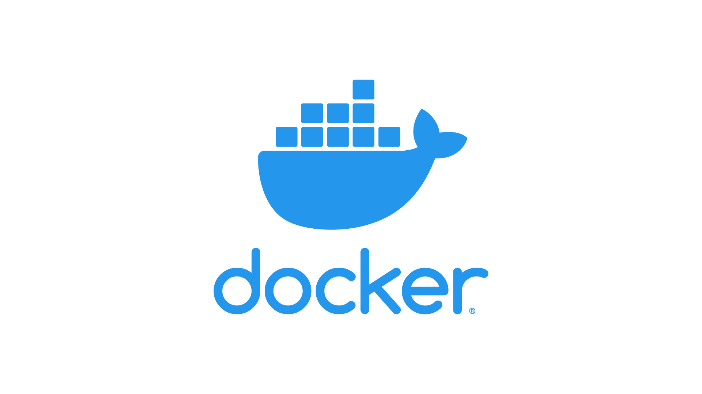
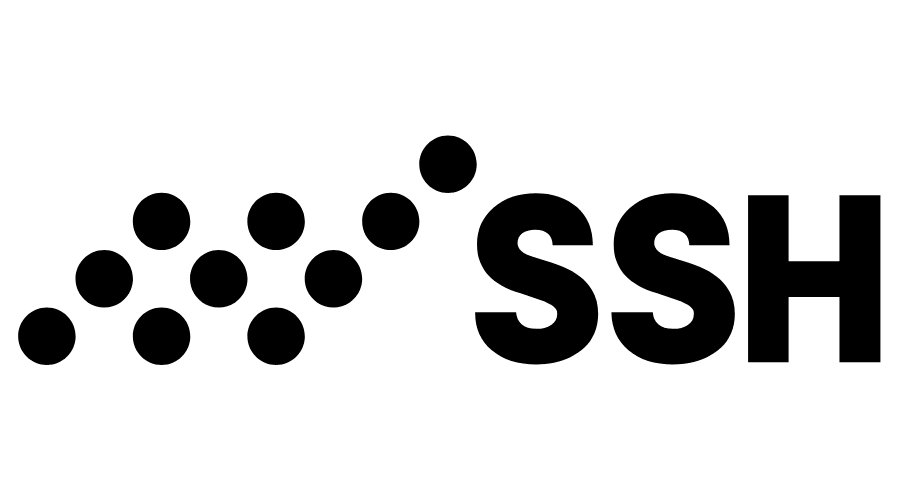
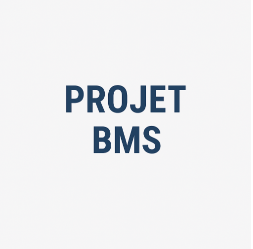
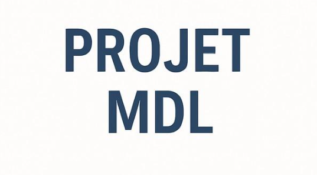
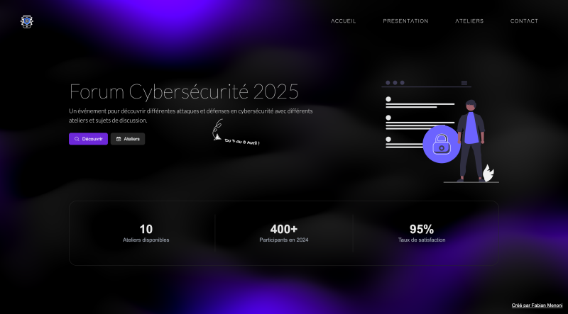
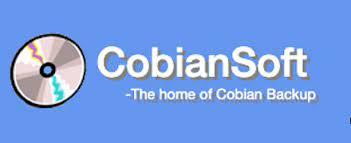
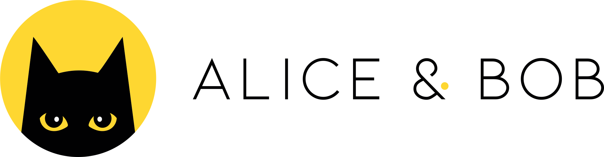

Veille Technologique
Diaporama
Présentation exposant les axes de veille retenus, les sources consultées et les évolutions technologiques identifiées dans le domaine des infrastructures réseaux et de la cybersécurité.
Ouvrir le diaporamaDocumentation
Veille réalisée sur le Cloud Computing — évolutions des modèles de services (IaaS, PaaS, SaaS), acteurs du marché et enjeux pour les infrastructures réseau et systèmes.
Ouvrir la documentationTableau de Synthèse
Tableau de synthèse des réalisations professionnelles du BTS SIO SISR — compétences validées en formation et en stage.
Prenons
contact.
Un projet, une opportunité, une question ?
Écris-moi, je réponds sous 24h.
Message envoyé !
Merci pour ton message — je te réponds sous 24h.